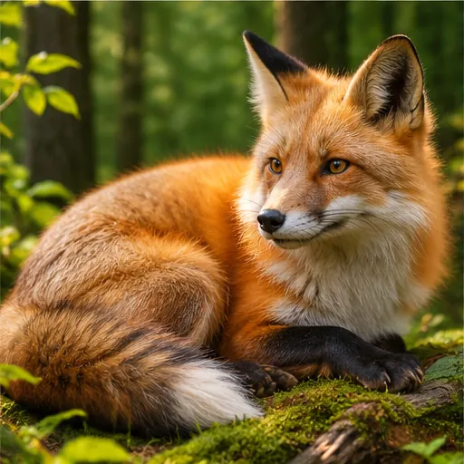

SpiralCam®
PHOTO STUDYVOL. 001
ПОГЛЯНЬ ІНАКШЕ
Мистецтво
Мистецтво
бачити.
Кожен кадр має свою історію. Знайди її у золотій спіралі.

01 — ВІДЧУЙ КОМПОЗИЦІЮ← ФОТОГРАФУЙ ПО-НОВОМУ
Відкриваємо камеру…
ЗОЛОТА СПІРАЛЬ · φ
1.0×
ФОТОГРАФІЯ + МАТЕМАТИКА
Золота спіраль
Проведіть погляд глядача по плавній кривій до головного об’єкта. Завиток підказує, куди розмістити найважливішу деталь.
Завиток → головний герой кадру
φ ≈ 1,618Поворот 90° → масштаб ×1,618
Фотоідеї з прикладами
5 добірок · 25 фотоГортайте приклади вбік. Натисніть на фото, щоб роздивитися спіраль зблизька.
Як працює «Датчик»
1
Увімкніть «Датчик» і дозвольте доступ до руху телефона.
2
Торкніться важливої деталі у відеокадрі — ціль закріпиться.
3
Повільно обертайте телефон на місці, суміщаючи мітку із завитком.
4
Коли напрямна зелена, фотографуйте.
Режим «Датчик» відстежує поворот телефона за гіроскопом, а не рух предмета у відео. Рухайте телефоном з однієї точки. Для точної фіксації об’єкта потрібен комп’ютерний зір.